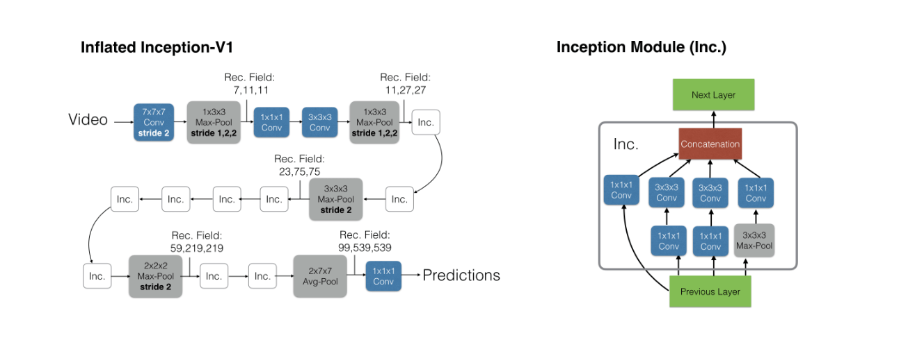
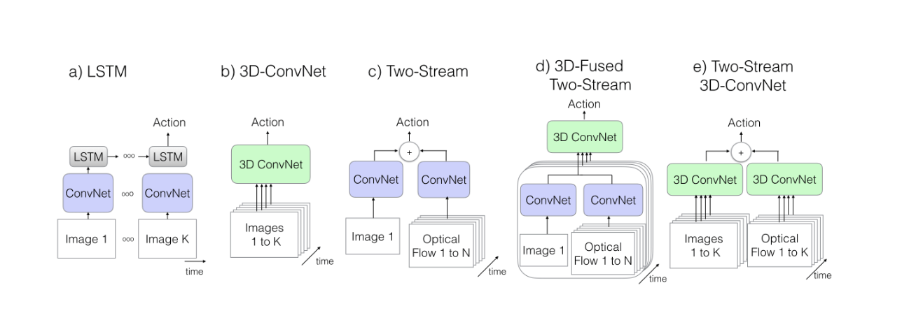

I3D
将 2D 卷积膨胀到 3D,用于有时序的三维视频理解任务，同时能够复用 2D 卷积的参数以减少训练周期。
同时，当时视频理解数据集规模普遍较小，提出了一个新的大型视频行为识别数据集Kinetics，比 HMDB-51 与 UCF-101高出了两个数量级。
复用2D卷积的参数
I3D 重用在 ImageNet 等 2D 图像数据集上预训练的 2D 卷积参数，从而提高模型的训练速度以及泛化能力。
将一个 的2D 卷积的权重复制到 的 3D 卷积，首先为了保持权重总和不变，将权重除以深度 以归一化，再将归一化后的权重直接复制 次拼接。
双流结构
分为两个分支：RGB分支与光流分支，这两个分支独立训练、独立预测，最后将他们的结果取平均值作为整体输出。
模型结构

与其他方法的区别

All articles in this blog are licensed under CC BY-NC-SA 4.0 unless stating additionally.